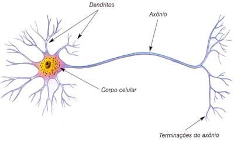
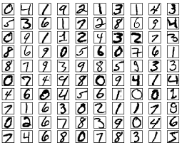
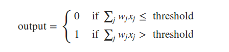
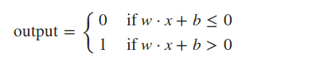

Redes Neurais
Bianca Rosa
Dev@Stone Pagamentos
- Python <3
- Golang
- JS
- Data Science
Disclaimer
Eu não trabalho com redes neurais. Talvez meu projeto final seja sobre isso. Eu só sou uma pessoa curiosa que estuda redes neurais no tempo livre.
Ou seja, quase nunca.
Neurônios
Neurônios
- Dentritos
- Corpo
- Axônio
Neurônios
Dentritos
Recebem os estímulos transmitidos pelos outros neurônios.
Neurônios
Corpo
Responsável por coletar e combinar informações vindas de outros neurônios.
Neurônios
Axônio
Responsável por transmitir os estímulos para outras células.
Redes Neurais
Representação computacional de um neurônio humano.
Problemas comuns
Sistemas de recomendação
Problemas comuns
Sistemas que se adaptam às preferências do usuário
Problemas comuns
Processamento de linguagem natural
Problemas comuns
Reconhecimento de dígitos
Perceptrons

Perceptrons
- Inputs (Entrada): x1, x2, x3, ..., xn
- Output (Saída): 1 único output binário
- Weights (Pesos): Números reais expressando a importância dos inputs.
Perceptrons
Output = 0, se o somatório dos pesos vezes a entrada for menor ou igual a um threshold.
Output = 1, se o somatório dos pesos vezes a entrada for maior a um threshold.
Show me the formulas!

Show me the formulas!

Problemas linearmente separáveis
- O que são.
- Do que se alimentam.
- Aonde vivem.
Perceptrons
Multi Layer Perceptrons
- Inputs (Entrada): x1, x2, x3, ..., xn
- Output (Saída): 1 único output entre 0 e 1
- Weights (Pesos): Números reais expressando a importância dos inputs.